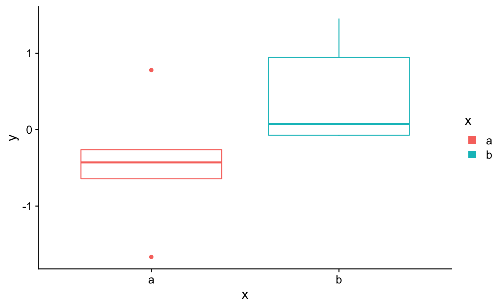
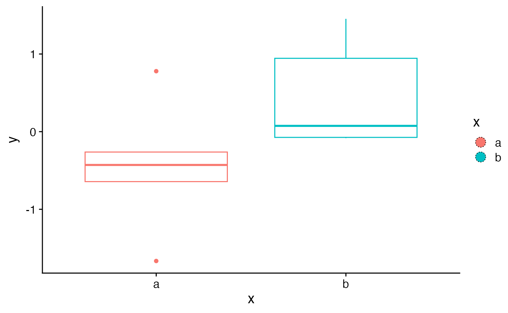

These functions create customizable legend key glyphs, such as filled rectangles or circles.
Unquoted name of the aesthetic to use for the outline color,
usually colour, color, or fill. Can also be a color constant, e.g. "red".
Unquoted name of the aesthetic to use for the fill color,
usually colour, color, or fill. Can also be a color constant, e.g. "red".
Unquoted name of the aesthetic to use for alpha,
usually alpha. Can also be a numerical constant, e.g. 0.5.
Unquoted name of the aesthetic to use for the line thickness of the
outline, usually size. Can also be a numerical constant, e.g. 0.5.
Unquoted name of the aesthetic to use for the line type of the
outline, usually linetype. Can also be a constant, e.g. 2.
Unit vector with four elements specifying the top, right, bottom, and left padding from the edges of the legend key to the edges of the key glyph.
library(ggplot2)
set.seed(1233)
df <- data.frame(
x = sample(letters[1:2], 10, TRUE),
y = rnorm(10)
)
ggplot(df, aes(x, y, color = x)) +
geom_boxplot(
key_glyph = rectangle_key_glyph(fill = color, padding = margin(3, 3, 3, 3))
)

ggplot(df, aes(x, y, color = x)) +
geom_boxplot(
key_glyph = circle_key_glyph(
fill = color,
color = "black", linetype = 3, size = 0.3,
padding = margin(2, 2, 2, 2)
)
)
